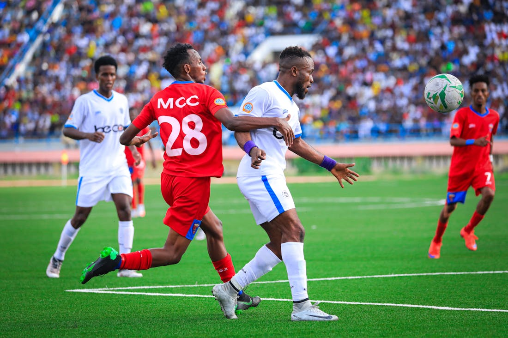
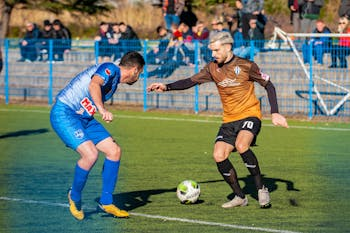
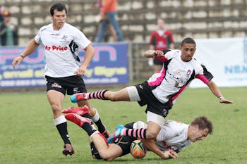
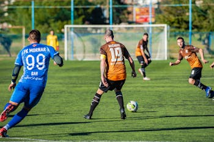

"Football League" redirects here. For other uses, see Football league. English Football League Founded 17 April 1888; 136 years ago Country England (68 teams) Other club(s) from Wales (4 teams) Confederation UEFA Divisions
Number of teams 72 Level on pyramid 2–4 Promotion to Premier League Relegation to National League Domestic cup(s) FA Cup League cup(s) Current champions Burnley(2022–23) TV partners The English Football League (EFL) is a league of professional football clubs from England and Wales. Founded in 1888 as the Football League, it is the oldest football league in the world, and was the top-level football league in England from its foundation until 1992, when the top 22 clubs split from it to form the Premier League. The Football League was rebranded as the "English Football League" (EFL) from the 2016–17 season. The EFL is divided into the Championship, League One and League Two, with 24 clubs in each division, 72 in total, with promotion and relegation between them; the top Championship division clubs change places with the lowest-placed clubs in the Premier League, and the bottom clubs of League Two with the top clubs of the National League. Currently four of the EFL clubs are from Wales – Cardiff City, Swansea City, Wrexham and Newport County – the rest of the 72 are located in England. The Football League had a sponsor from the 1983–84 season, and thus was known by various names. The English Football League also organises two knock-out cup competitions, the EFL Cup and the EFL Trophy. The operations centre of the Football League is in Preston, while its commercial office is in London
| Division | Promoted directly | Promoted via playoffs | Relegated |
|---|---|---|---|
| EFL Championship | Top two clubs | One from 3rd to 6th-place finishers | Bottom three clubs |
| EFL League One | Top two clubs | One from 3rd to 6th-place finishers | Bottom four clubs |
| EFL League Two | Top three clubs | One from 4th to 7th-place finishers | Bottom two clubs |
Promotion and relegation are determined by final league positions, but to sustain interest for more clubs over the length of the season, one promotion place from each division is decided according to a playoff among four clubs, which takes place at the end of the season. It is possible for a team finishing sixth in the Championship or League One, or seventh in League Two, to be promoted rather than the clubs finishing immediately above them in the standings
|  |  |  |